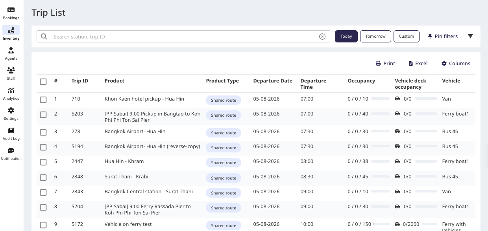
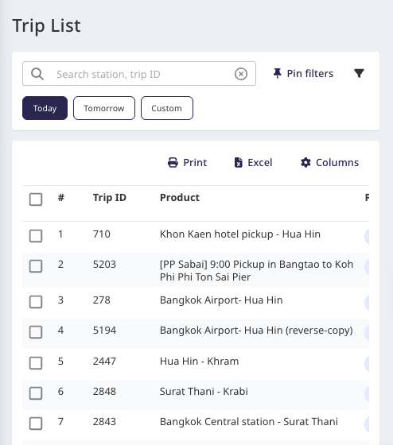
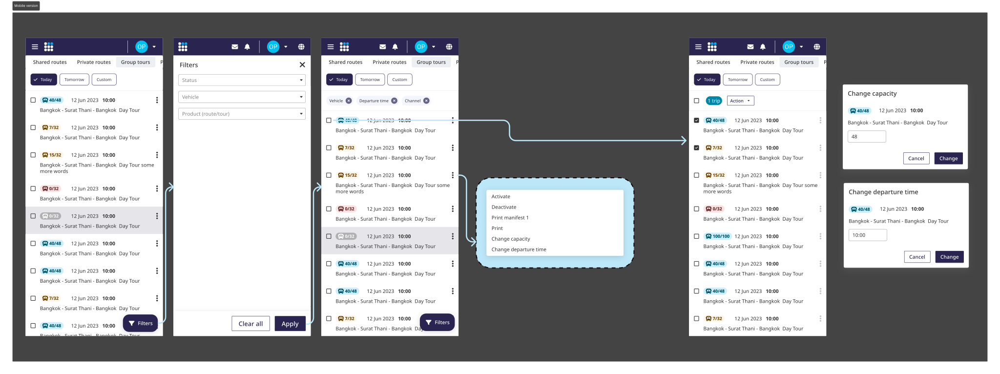

Список рейсов — мобильная оптимизация
На десктопе список рейсов жил как плотная таблица. Считалось, что на телефоне им никто пользоваться не будет — поэтому я проверила это данными, нашла реальные мобильные сценарии и переработала список так, чтобы он показывал только то, что нужно для быстрого поиска рейса, а все действия убраны в меню.
Таблица, сделанная под десктоп
В основном десктопном приложении список рейсов был спроектирован как таблица. Исходная гипотеза была простой: на телефоне этой страницей толком никто пользоваться не будет — значит, оптимизировать её под мобильные незачем.
При этом у меня не было вообще никаких данных о том, как часто этой страницей пользуются на мобильном — и зачем.


Список рейсов как он был — десктопная таблица и она же на узком экране. Нажмите, чтобы увеличить.
Что на самом деле показали данные
Я настроила теги событий в Google Analytics и подключила Hotjar, чтобы проверить предположение. Оказалось, что 25% обращений к этой странице шли с мобильных устройств. Частота на пользователя была невысокой — но это случалось по несколько раз в день, в те моменты, когда это было важно.
От сессий к опросу
По сессиям Hotjar было сложно понять, что именно люди пытались сделать. Поэтому я провела дополнительный опрос среди пользователей, чтобы получить контекст за этими тапами. Он выявил два основных операционных сценария, ради которых люди заходили с мобильного — быстрые проверки по ситуации, а не глубокая работа.
Ключевой инсайт: люди берутся за систему на мобильном, чтобы выполнить простые операционные действия, требующие изменений на текущую или следующую дату.
Только самое нужное, действия в меню
Мобильный дизайн несёт лишь ту информацию, которая нужна, чтобы удобно найти рейс — загрузку, дату и время, маршрут и статус с одного взгляда, — а все действия перенесены в меню конкретного рейса. Получился спокойный, легко просматриваемый список для тех немногих ценных задач, которые люди действительно делают на телефоне.

Попробуйте на мобильном
Рабочий мобильный прототип с тестовыми данными — нажмите меню ⋮ у рейса, чтобы увидеть действия, или откройте Фильтры.